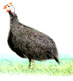

Any bird with a call like "Buckwheat!" and a head like a helmet needs some redeeming quality. In the case of the guinea fowl, which have both the call (in this case, the hens say "Buckwheat!") and the oddly shaped, nearly bald noggin, their appetite for ticks may be their meal ticket in more than one way.
First introduced to the United States from their native Africa during pre-Civil War days, guineas have been kept on small farms and homesteads, usually mixed in with chickens and assorted other fowl, and admired mostly for their delicately speckled eggs and their "watch dog" instincts. They reliably sound their alarm call whenever hawks circle the chickens or rats infiltrate the poultry house to filch eggs, or when strangers drive up the lane.
Although guineas share a U.S. Department of Agriculture poultry classification with chickens, they range further, fly higher and are more active than chickens, says Jeannette Ferguson of Waynesville, Ohio, author of the how-to book, Gardening with Guineas.
"Guineas are rough, vigorous, hardy, basically disease-free birds," she says. "They're also the most active 'gardener' on the farm. Continuously on the move, they pick up bugs and weed seeds with nearly every peck they take-and they do it without destroying plants because they do not scratch like chickens."
Common helmeted guineas, Numida meleagris, are recog nized widely in folk history for their effectiveness in reducing populations of ticks and other insects. In 1992, a scientific study headed by researcher David Cameron Duffy confirmed the anecdotal evidence by finding a "highly significant difference in tick presence in response to guinea fowl activity."
Duffy, now a professor of botany at the University of Hawaii, says the study, conducted in New York, showed that guineas would perform tick patrol at the perimeter of a field or lawn despite their instinct to avoid brushy borders and the predators that lurk there. Ticks will venture about a yard out from the brush, but beyond that point, lawns generally are much too hot and dry.
Duffy says guineas can be most effective against ticks as part of an integrated pest management program that includes regular removal of leaf litter, which is a tick's favorite home. (Results of the guinea study were widely reported, including in the New York Times and Time magazine, and in The Wilson Bulletin of the Wilson Ornithological Society, which now has the study archived and on line at http://elibrary.unm.edu/wilson/ .) Model Christie Brinkley is credited along with Duffy and another researcher, Randall Downer, for the work; Duffy says Brinkley, concerned about her young daughter's safety, actually helped initiate the project through her congressman after she heard some of the anecdotal evidence about guineas and tick control.
Because ticks have been identified as vectors of Lyme and other diseases, more people are looking for ways to control them and giving guineas a try. Ralph Winter owns and operates the Guinea Farm in New Vienna, Iowa, the largest guinea fowl hatchery of fancy varieties in the world, with a breeding flock of 2,600 birds in 23 different colors ( www.guineafarm.com ). Every Tuesday from mid-May to mid-October, he hatches and ships out 5,000 baby guineas, called keets.
In the last 10 years, Winter's business has tripled, "especially on the East Coast, the main deer tick area." Most of the buyers want the birds for bug control. Before Lyme Disease was discovered, people bought guineas to eliminate dog ticks on their pets, grasshoppers from their gardens, fire ants from their lawns or flies from their stables. "Guineas will eat 'em all," he says.
Twenty years ago, Ferguson bought guineas to rid her garden of Japanese beetles and grasshoppers. She says she just wanted some decent flowers to enter in her garden club competitions. The guineas did that for her-since their arrival, she has won more than 100 prize ribbons for her now-perfect blooms-and they ate their way through her tick population, too. "Ticks were thick here," she says of her 14-acre country home site.
Ferguson says she and her family never have had Lyme disease, but some guinea owners, including Phyllis Bender of Westport, Connecticut, bought their first birds after contracting that illness. Bender first was diagnosed with Lyme eight years ago and then contracted a second tick-borne disease. Her pet dog has had Lyme three times, and had such severe torn ligaments around its knees from the disease that orthopedic surgery had to be done.
"I have a lot of woods in the back," Bender says of her one-acre New England lot. "We can see the deer walking up the street here." A gardener like Ferguson, she put up an 8-foot-high fence to keep the deer out of her immediate back yard, but the ticks already had moved in. Four years ago, she heard about guineas and their spectacular appetite for ticks on a television show. A short time later, she saw some keets for sale at her local organic fruit and vegetable stand; she didn't hesitate to buy five on the spot.
"I was very excited, but I didn't know anything about them," she says. A friend who owned guineas offered tips on basic guinea care. In urban Westport, keeping guinea fowl is legal as long as they remain on the owner's property, so Bender had a friend build an 8-by-16-foot coop in her yard. The four-sectioned coop includes one 6-by-4-foot space that she uses for rehabilitating injured guineas. Her birds go in and out of the coop freely, she says, and always have stayed in her yard without having their wings clipped.
Bender also has outfitted a bird room inside her home, where "house guineas" (special pets) reside during winter months; several have moved inside for one reason or another over time. "I love the birds, I really do," Bender says.
The genuine regard guinea owners have for this feisty fowl is common, Winter says, and Ferguson agrees, noting the birds "are just very entertaining to sit and watch." She became so fond of them she developed a Web site, www.guineafowl.com, which has triggered thousands of hits a month and enthusiastic e-mails from guinea owners and would-be owners hungry for information. "People wanted to know everything from what to feed a guinea to how to tame one, what sort of housing they needed, what colors were available and how to sex the birds," she says.
To better manage the flood of inquiries, Ferguson set up a message board on the Web site, founded the Guinea Fowl Breeders Association and, finally, in desperation, she says, wrote her book, Gardening with Guineas.
Despite guineas' positive traits, they aren't without their faults. "The No. 1 problem guinea-owners with neighbors have," she says, "is unhappy neighbors. The birds' alarm call is why they're called 'the farmer's watch dog.' When one starts, the whole flock follows suit." Female guineas are noisier than the guinea cocks, who have a one-syllable call, "Che, che, che" or "Tut, tut, tut," and tend to chatter less when alarmed than the other sex.
"Before buying birds, discuss your intentions of getting guineas with any close neighbors," says Ferguson. "Give them a bit of history on the bird and share with them the value of these voracious bug eaters." She also advises new owners to start with day-old keets, which are easier to train, and to stay with those birds, rather than introducing new birds to the flock. As the birds mature and become more familiar with their surroundings, they quiet.
In Connecticut, Bender's neighbor has a swimming pool that backs up to her fence; she keeps his goodwill by selling off most of her wintertime flock, which can number as high as 30 birds. Even with as few as five adult birds on tick patrol in the summertime, Bender says, she worries less about Lyme disease and feels free to garden and to let her grandchildren play in the yard.
For additional mail-order hatcheries that sell guinea keets, or for more stories about guineas on pest patrol, visit MOTHER'S Web site at http://www.motherearthnews.com . To order Gardening with Guineas, see MOTHER'S Bookshelf, Page 120. Specialty guinea sites on the Web include www.guineafowl.com and the Guinea Fowl Breeders Association's www.gfba.org. A new British publication on guineas, Guineafowl, Past and Present, focuses on guinea history and guineas as meat birds, and is sold by Murry McMurray Hatchery ( www.mcmurrayhatchery.com ).
Mother Earth News
|
 |
|
|